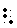

|
Dynamic markings are the print notations that tell the musician how loud or soft to perform the music. Dynamic markings in music can either be words or abbreviations of words, or symbolic. Expression markings are those special symbols that describe other modifications, such as an increase in tempo. Expression markings in this session refer to all print notations that describe to the musician how to perform the music, including volume, tempo, etc.
One of the most important signs here is the "word sign", . In braille music, literary material is always preceded by the word sign. Dynamics and abbreviations are preceded by this word sign, and placed without any intervening spaces.
Name of
dynamic |
Common
symbol |
Braille
notation |
| Crescendo or cresc. |
|
 ... ... |
| Descrescendo (diminuendo) |
|
 ... ... |
Cresc. (abbreviated
crescendo |
cresc. |
|
Decresc. (abbreviated
decrescendo |
decresc. |

|
Swell
(cresc/decresc. on a single note |
|
 |
| Diminuendo |
dim. |
|
| Forte |
f |
|
| Fortissimo |
ff |
|
| Fortississimo |
fff |
|
| Mezzo-forte |
mf |
|
| Mezzo-piano |
mp |
|
| Piano |
p |
|
| Pianissimo |
pp |
|
| Accelerando |
accel. |
|
| Rallentando |
rallen. |
|
| Ritardando |
rit. |
|
| Ritenuto |
riten. |
|
Pause
(fermata) |
|
 |
Tenuto
(pressed tone) |
|
|
Comma
(break in rhythm) |
' |
|
Staccato
(detached note) |
|
|
Staccatissimo
(very detached note) |
|
|
Some notes on usage of expression marks. The expression mark goes in front of the note it is affecting. In the case of "multiple-note" expressions (such as the graphic crescendo and decrescendo), the beginning the expression goes in front of the first note affected, and terminates after the last note affected. The multiple expression can also be cancelled by another expression marking, such as in this example:
In this example, the crescendo that starts on the B in the first measure is terminated by the fortissimo expression mark on the E in the second measure.
The note following an expression mark must have a new octave mark. If the braille cell following the expression mark contains dots 1, 2, and/or 3, there must be a dot 3 following the expression mark. An example:
In this example, the expression mark for the fortissimo is "closed" with a dot 3, since the next cell contains the dots 2-3-6 notation for a staccato note. Since that notation has left-dots (2 and 3), the expression mark must be closed off with the dot 3. In this example, we also take advantage of doubling -- since we have four staccato notes, we can put a double staccato symbol in front of the first staccato note, and then a single staccato symbol in front of the last staccato note. Doubling can be used if you have four consecutive notes that contain the same notation. Doubling is not interrupted if you have rests between the affected notes.
In this example, we could actually do the braille much more simply. Since there are four notes that have staccato marks, we can use the "double" staccato mark. Put a double staccato mark (dots 2-3-6) where the consecutive notes begin, and one before the last staccato'd note. If there are rests between consecutive notes, you can still use the doubling notation.
Words of Expression
In addition to some of the expression markings shown above, print music routinely includes notations such as "a tempo", "allegro", "moderato", and the like. These often indicate tempo and mood. When these words are printed above the music at the beginning of the piece, they are transcribed on the same line as the key and time signatures, preceding them and centered. For example, a piece with four sharps in 3/4 time with the words "Con moto" would appear as such:
No contractions are used for foreign words, but can be used for words such as "Moderately fast" or "quickly."
More difficult are metronome markings. These indicate how quickly a particular note value is to be played. For example, the sample below suggests that this music is to be played reasonably fast, 120 quarter notes per minute!
Often times there will be a variety of markings at the beginning of the piece. Tempo markings are usually brailled first, then dynamic markings. Follow, however, the print notation, brailling things that appear first (farthest to the left) first. There must be a period (dots 2-5-6) after the tempo or mood word.
In the above example, the "larger" tempo indicator and metronome marker are centered along with the key and time signatures. The dynamic and mood markers ("mp" and "dolce") are placed on the first line of music, followed by the first measure of music (in the example, the groups of dot 3's just mean more stuff comes after the first measure!).
One more quick example. Occasionally you will see an expression followed by a series of dashes or lines, showing the musician where the expression modifies the music. To show this, we use two dot 3's for the beginning, and a word sign and one dot 3 following the note where the continuation is discontinued:
We will try to include lots of different examples of expression markings with the various examples!
|
 Tჸe $_hodor bARionlegitim@.
Tჸe $_hodor bARionlegitim@.